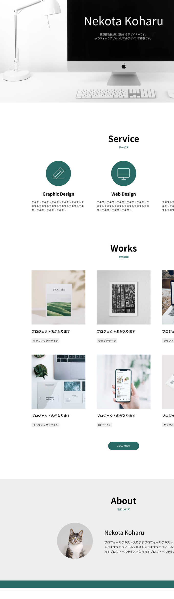

訓練校 IT スクール｜全4時間の集中授業
CSSだけで作るアニメーション。ふわふわ動かす・回転・ホバーで拡大などが、JavaScriptなしで実装できる。きっかけで動く「transition」と、自動で動く「@keyframes animation」の2本立て。
下のデモは実際に動くCSSです。赤い四角にマウスを乗せる（ホバー）と動きます。@keyframesのデモは自動で動き続けます。Chromeで開いて試してください。
| 時間 | セクション |
|---|---|
| 1時間目 | transition（きっかけで動く） |
| 1時間目 | transitionの4プロパティ・イージング |
| 2時間目 | ボタンのホバーアニメーション演習 |
| 3時間目 | @keyframes animation（自動で動く） |
| 3時間目 | animationの6プロパティ |
| まとめ | transition と animation の違い |
property / duration / timing-function / delayduration として適用されるtransition-property の初期値は all（全部）ease-out など）。電車・コンビニの扉と同じdelay は実務でほぼ0（ユーザーを待たせると違和感）name / duration / timing / delay / iteration-count / direction
:hover で width:400px にするだけだとパッと切り替わる。そこに transition を足すと「何秒かけて変化するか」を指定でき、ぬるっと動く。transition自体は「変化に時間をかける」プロパティ。
/* ① 右に伸びる */ .box { transition: 0.5s ease-out; } /* 元の要素に書く！ */ .box:hover { width: 400px; } /* ③ ホバーして1秒後にズームアップ */ .box { transition: transform 0.4s ease 1s; } .box:hover { transform: scale(1.5); }
:hover 側に transition を書くと、カーソルを離した時にパッと戻ってしまう。:hoverは「乗った時だけ」のセレクターで、離した時を考慮しないから。元の要素（.box）に書けば行きも帰りも滑らか。忘れやすいので注意。
transition は4つのプロパティの一括指定。省略した値は初期値が入る。
| プロパティ | 意味 |
|---|---|
transition-property | 何を変化させるか（初期値 all＝全部） |
transition-duration | 変化にかける時間（0.5s / 500ms） |
transition-timing-function | イージング（動きの緩急） |
transition-delay | 開始までの遅延（実務はほぼ0） |
時間だけ書くと duration 扱い。property を省くと初期値allで変化できるもの全部にかかる（色も幅も同時に動く）。「これだけ動かしたい」時はpropertyで指定。
動きの緩急＝電車やコンビニの扉と同じ。開き始め・閉まり際が少し遅いと自然に見える。
ease / ease-in（最初ゆっくり）/ ease-out（最後ゆっくり）/ ease-in-out（両端ゆっくり）。等速より自然でユーザーに違和感を与えない。
transitionより複雑な動きは @keyframes を使う。開始0%〜終了100%の間に、好きなタイミングで「この時はこうなる」を打ち込む（動画編集のキーフレームと同じ発想）。animationプロパティと@keyframesを同じ名前で紐付けて発動。
/* ① animationプロパティで設定（一括指定） */ .sample { animation: zigzag 2s ease 0s 3 normal; /* 名前 時間 緩急 遅延 回数 再生方法 */ } /* ② @keyframesで動きを定義（名前を一致させる！） */ @keyframes zigzag { 0% { transform: translate(0, 0); } 50% { transform: translate(50px, 50px); } 100% { transform: translate(0, 80px); } }
0%〜100%の中は自由に刻める（0/50/100でも、1%刻みで100個でもOK）。名前（zigzag）は自分で決める固有名詞。
| プロパティ | 意味 |
|---|---|
animation-name | @keyframesと紐付ける名前（自分で決める） |
animation-duration | 1回の長さ（時間） |
animation-timing-function | イージング |
animation-delay | 開始までの遅延 |
animation-iteration-count | 繰り返し回数。infinite で無限ループ |
animation-direction | 再生方法。normal / alternate（偶数回は逆再生） |
CSSでアニメーションを作っておき、実行のタイミングはJavaScriptで制御する。「スクロールしたらふわっと出る」などはこの組み合わせ。今のCSSの土台があってこそ。
午後からは新しいコーディング練習。「Nekota Koharu（猫小春）」さんのポートフォリオサイト（ダミーサイト）を、これまでの知識で作る。早い人は3時間くらいで完成。これは元々Figmaの教科書で作る題材なので、先にコーディング練習→後日「Figmaで作るならどうするか」を学ぶ流れ。

nekota-koharu や portfolio など自由に| 用語 | 意味 |
|---|---|
| transition | きっかけで状態を変化させるアニメーション（一括指定） |
| transition-property | 何を変化させるか（初期値all） |
| transition-duration | 変化にかける時間（0.5s / 500ms） |
| timing-function（イージング） | 動きの緩急（ease-out等） |
| transition-delay | 開始までの遅延 |
| transform: scale() | 拡大（ズームアップ） |
| transform: translate() | 位置の移動 |
| @keyframes | 0〜100%で動きの過程を定義 |
| animation-name | @keyframesと紐付ける名前 |
| animation-iteration-count | 繰り返し回数（infinite＝無限） |
| animation-direction | 再生方法（normal / alternate） |
| infinite / alternate | 無限ループ / 行ったり来たり |
infiniteで無限、alternateで行ったり来たり「これは画面共有で見るより、自分で書いてみた方が早いですね。」
→ アニメーションは手を動かして体感するのが一番。
「電車の扉、開き始めと開き終わりが少し遅くなるの分かります？」
→ イージング（緩急）の身近な例。等速より自然に見える。
「:hoverに書くと、カーソルを離した時にパッと戻っちゃう。意外と忘れるのでメモを。」
→ transitionは元の要素に。今日いちばんの落とし穴。